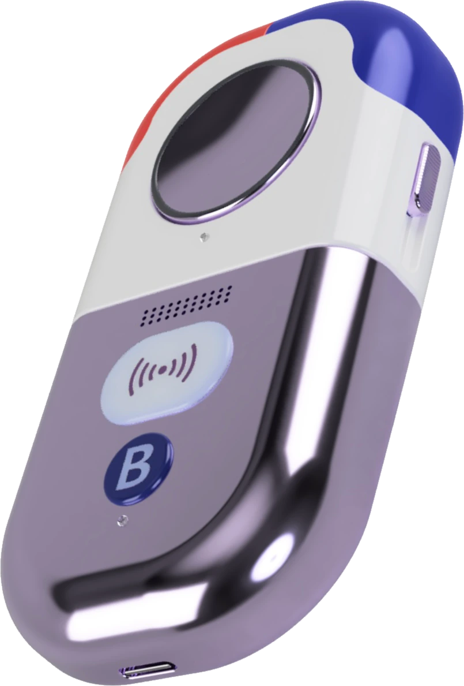
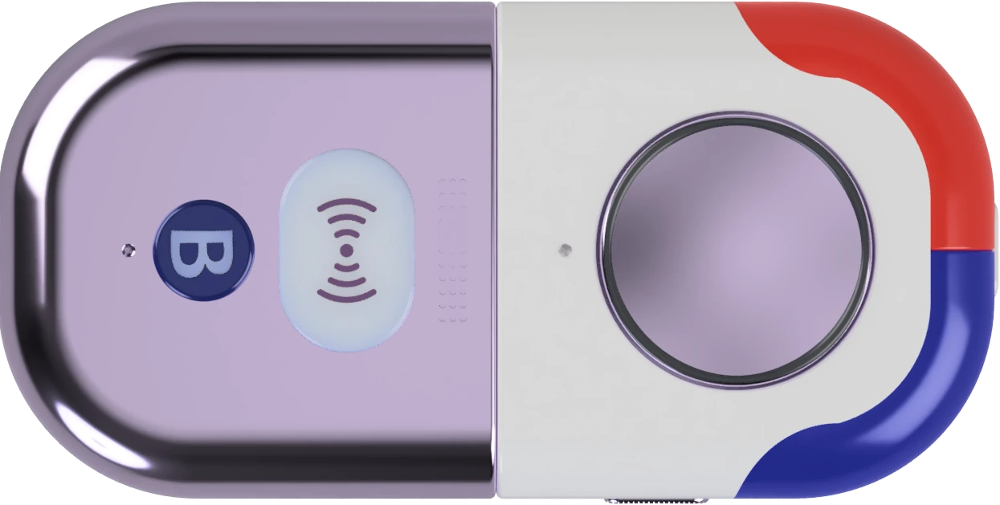

독립 블루투스 비상 컨트롤 배지
블루투스 자체망과 MCU AI로, 인터넷 없이도 경광등 · PTT 공지 · 무전을 가슴 위 한 손 거리에서.
제품 소개
축제 안전 요원의 가슴 위에서 경광등 · 공지 · 무전을 하나로 묶은 독립형 비상 배지
축제 현장의 안전 요원과 경찰관을 위해 설계된 독립형 폼팩터입니다. 네트워크 지연이나 외부 통신 환경에 구애받지 않고 현장에서 바로 작동합니다.
MCU AI와 연동되어 일상 상황은 물론, 인터넷 기반 AI를 쓸 수 없는 절전·셧다운 같은 위기 상황에서도 시각·청각 알림과 소통망을 제공합니다. PTT(Push-To-Talk) 통신과 물리 버튼으로 신속한 현장 통제와 대피를 돕습니다.
3D 뷰어 · 작동 체험
모델을 돌려 보고, 오른쪽에서 작동 순서를 체험하거나 부품을 하나씩 살펴보세요.
01부터 순서대로 눌러 보세요. 3D 모델의 해당 부위와 LED가 함께 바뀝니다.
* 화면 속 동작은 기획서의 작동 방식을 시각적으로 표현한 시뮬레이션입니다.
부품을 고르면 3D에서 위치가 빛나고 설명이 펼쳐집니다.
-
관계자 간 무전, 상황 보고 및 시스템 확인
한 번 클릭하면 내부 통신망(무전망)에 접속해 다른 기기 사용자와 실시간으로 소통하고, 한 번 더 클릭하면 연결을 종료합니다. 버튼 아래 LED로 연결 상태를 확인합니다(원활 파란색 · 통신 불량 빨간색).
-
긴급 상황 보고 및 MCU AI 공지
길게 누르는 동안 MCU AI가 주변 소음을 걸러 음성을 캡처하고, 말한 내용을 재난 안내 문자 형식으로 바꿔 블루투스 연결망에 공지합니다.
-
블루투스 제어망 ON/OFF
PTT 공지 전, 주변 시민들의 전자기기와 내부 기기의 블루투스망을 배지 자체 네트워크로 즉시 통합·활성화합니다. 버튼 아래 LED로 연결 상태를 표시합니다.
-
사용자 음성 캡처
사용자의 음성을 캡처하는 내부 삽입형 마이크입니다.
-
오작동 방지 잠금
실수나 사고로 블루투스 제어망과 PTT 공지 송출 버튼이 활성화되지 않도록 막아 주는 안전 잠금 장치입니다.
-
비상 안내, 위치 신호, 착용
슬라이드로 비상 모드가 켜지면 경광등이 비상 상황과 경찰 인력의 위치를 알립니다. 경광등 중앙의 AI 신호기는 주변 AI가 인력 위치를 파악하도록 신호를 계속 보냅니다. 클립은 전술 조끼에 맞춘 형태입니다.
사용 시나리오
돌발 상황 인지부터 비상 신호 송출까지, 다섯 단계로 이어지는 현장 대응 흐름
-
01 돌발 상황 인지 및 배지 시스템 활성화
현장 요원이 돌발 상황을 인지하고 착용한 배지의 비상 시스템을 활성화합니다.
-
02 현장 블루투스망 자체 통합 (네트워크 구축)
주변 시민들의 전자기기와 내부 기기의 블루투스망을 배지 자체 네트워크로 통합합니다.
-
03 PTT 음성 캡처 및 MCU AI 재난 공지 자동 송출
PTT 버튼을 누른 채 말하면 MCU AI가 음성을 캡처해 재난 안내 문자로 바꿔 송출합니다.
-
04 내부 무전앱을 통한 상황 공유
내부 통신망에 접속해 다른 요원들과 실시간으로 상황을 공유합니다.
-
05 현장 시각 통제 및 AI 신호기로 비상 신호 송출
경광등으로 현장을 시각적으로 통제하고, AI 신호기가 주변 AI에 위치 신호를 보냅니다.
제품 포인트
사용 위치
웰컴 게이트 앞에서 시작해
축제 전반을 지키는 배지안전 요원과 경찰관이 웰컴 게이트 앞을 기점으로 축제 현장 전반을 오가며 착용합니다. 전술 조끼나 상의 왼쪽 가슴에 스프링 클립으로 고정해, 손을 쓰는 중에도 버튼과 경광등이 바로 앞에 있도록 합니다.
제품 상세
3D 모델과 렌더링을 기준으로 정리한 제품 정보

| 크기 | 약 75 × 151 × 31 mm (W × H × D) 클립 포함 두께 약 40 mm · 3D 모델 치수 기준 |
|---|---|
| 재질 | 경광등 커버: 투명 폴리카보네이트 (PC · Polycarbonate) 외관 색상: 라벤더 크롬 하단 바디 · 화이트 상단 바디, 적·청 경광등 커버, 메탈 스프링 클립 |
| 표면 처리 | 고광택 (High-Gloss) 내스크래치 하드 코팅 (Anti-scratch Hard Coating) |
| 작동 방식 | 독립 블루투스 자체망 + MCU AI 무전 버튼 · PTT 버튼 · B 버튼 · 안전 잠금 슬라이드의 물리 조작 |
| 전원 | USB-C 충전 포트 (하단) 1회 충전 시 최대 24시간 사용 |
| 구성 | 무전 버튼 · PTT 버튼 · 블루투스 ON/OFF 버튼 · 상태 LED 2개 · 마이크 · 안전 잠금 슬라이드 · 적청 경광등과 AI 신호기 · 의상 고정용 클립 |
| 기타 | 절전·셧다운 등 인터넷 기반 AI를 쓸 수 없는 위기 상황에서도 작동하도록 설계 |
* 크기는 제공된 STL 모델의 치수로 계산한 값입니다.